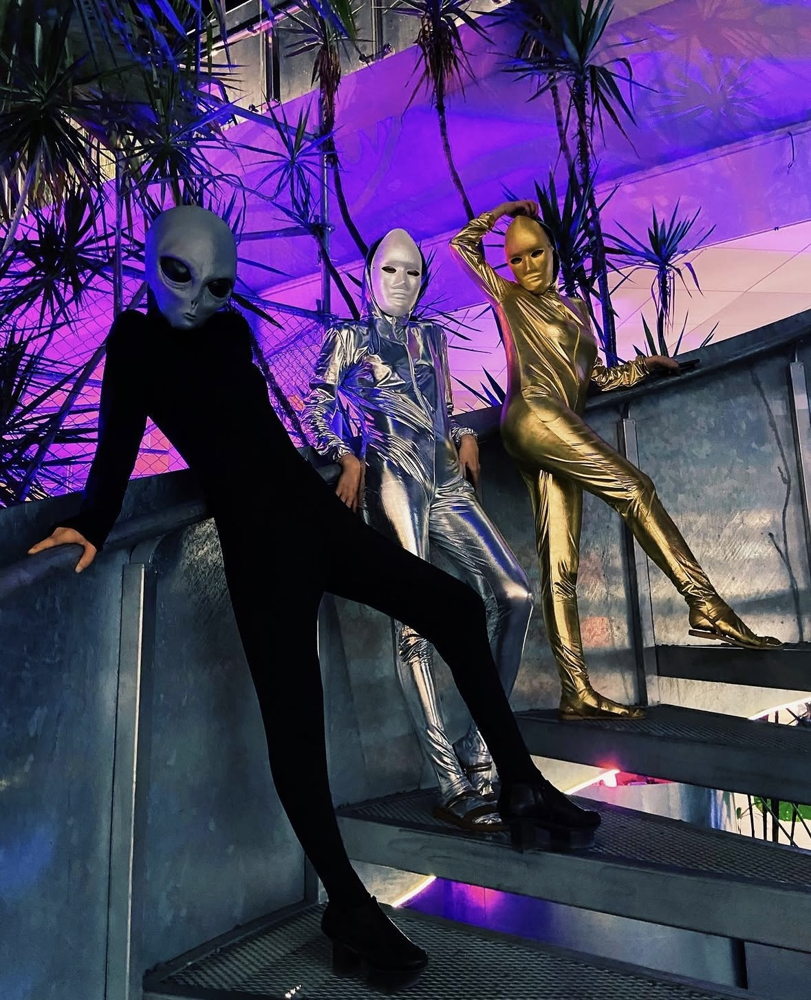
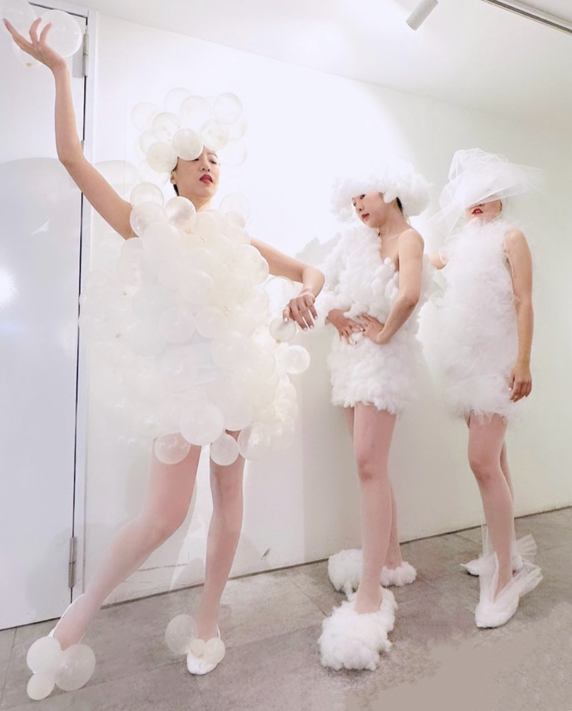

CH.01 // MIDSUMMER
- [THEME]Immersive_Night_Party_·_Sci-Fi
- [WORKFLOW]Costume_Design_·_Making_·_Performance
[SYSTEM READY]
styling & visual studio
A styling and visual studio moving between parties, artists and brands. We believe the best looks feel grown rather than made — pairing design thinking with engineering to shape looks, performances and the systems that run them.


signal_locked · daydream_in_motion → live